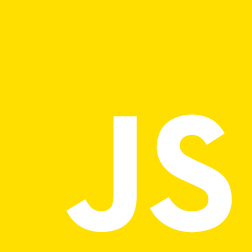
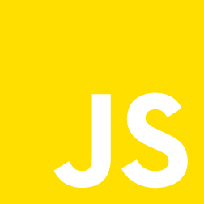

Clock javascript
In the beginning of my development apprenticeship, I experimented with JavaScript. I made a functional clock to practice and try to understand how this programming language works. This project also allowed me to progress in CSS, because the structure of the clock and realize with HTML and CSS.
Tools

 

For this project, I used HTML for the site structure, CSS to manage the style, JavaScript to retrieve the machine time and animate the hands and finally Visual Studio Code as development environment.
My other projects